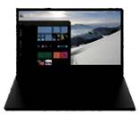
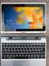
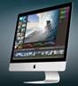
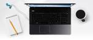

SISTEMA OPERATIVO |
EQUIPOS |
REQUERIMIENTOS PARA LA INSTALACION |
Windows ENIX |
HP
|
- Equipo informático: Mínimo 1,6 GHz (o superior) (32 bits o 64 bits).
- Memoria: 2,0 GB DE RAM
- Disco duro: 3,0 GB de espacio en disco disponible
- Pantalla: resolución de pantalla de 1024 x 768
- Hardware de gráficos: Mínimo de 128 MB de memoria de gráficos
- Sistema operativo: Windows 10, 8,1 Windows 10, Windows 8 o Windows 7 Service Pack 1 en 32 bits y 64 bits. Para obtener la mejor experiencia, use la última versión de cualquier sistema operativo.
- Versión de .NET: Requiere .NET 4,5 CLR o posterior
- Vídeo: Cámara USB 2,0
|
Microsoft Windows |
Lenovo
|
- Procesador: 2 GHz compatible con PAE, NX y SSE2.
- RAM: 1 GB (32 bits) o 2 GB (64 bits).
- Espacio en disco duro: 16 GB (32 bits) o 20 GB (64 bits).
- Tarjeta gráfica: Dispositivo gráfico Microsoft DirectX 9 con controlador WDDM.
- Cuenta de Microsoft y acceso a Internet.
- Resolución de pantalla de al menos 1366 x 768 píxeles.
|
Sistema Batch |
Dell
 |
- RAM: 1 GB
- Procesador: Procesador IBM 604e con una velocidad de reloj de 375 MHz o superior
- Espacio de disco libre: /tmp debe tener 1 GB de espacio de disco libre. Si Tivoli Identity Manager instala WebSphere Application Server, {DIR_INICIAL_WAS} debe tener 800 MB libres de espacio de disco y /var, 300. Asigne 500 MB para /itim45.
|
Unix |
Acer
 |
- RAM: 1 GB.
- Procesador: Procesador IBM 604e con una velocidad de reloj de 375 MHz o superior.
- Espacio de disco libre: /tmp debe tener 1 GB de espacio de disco libre.
|
MS-DOS |
Apple
 |
- Memoria RAM : 16 Mb ( Han de quedar libres un mínimo de 540 K en la versión DOS, esto se ve con la orden MEM del sistema operativo).
- Disco duro : 50 Mb libres + 6 Mb por cada 1000 pacientes con todos sus datos aproximada mente.
- Monitor : VGA color
- Tarjeta gráfica : VGA 1024
- Configuración VGA : 640x256 pixels a 256 colores (windows)
- Disquetera : 3 ½ de 1,44 Mb
- Impresora : compatible con el ordenador.
|
Mac Os |
Toshiba
|
- Un procesador Intel Core 2 Duo, Core i3, Core i5, Core i7 o Xeon
- Mac OS X v10.6.6 o posterior para realizar la instalación a través de Mac App Store (se recomienda v10.6.8)
- 7 GB de espacio disponible en el disco
- 2 GB de RAM
|
Linux |
Samsung
|
- Procesador x86 a 700 MHz.
- Memoria RAM de 512 Mb.
- Disco duro de almacenamiento de 5 GB.
- Una tarjeta grafica y un monitor que puedan soportar una resolución de 1024 x 768.
- Lector de DVD y/o puerto USB.
- Una buena conexión a Internet.
|
ReactOS |
Asus
|
- CPU x86 o x86-64 Pentium o superior.
- 64MB de RAM (256MB recomendados)
- Disco duro IDE/SATA de al menos 350MB.
- Partición de arranque en formato FAT16/FAT32.
- Adaptador gráfico VGA de 2MB (VESA BIOS 2.0v o superior)
- Unidad de CD-ROM.
- Teclado y ratón estándar
|
Windows 98 |
Alienware
|
- procesador 486DX con 66 megahercios (Mhz) o superior (se recomienda una CPU Pentium)
- 16 megabytes (MB) de memoria ram (se recomienda 24 MB)
- una actualización típica desde Windows 95 requiere aproximadamente 195 MB de espacio en disco duro libre pero el espacio en disco duro puede ir entre 120 y 295 MB dependiendo de su configuración de equipo y las opciones que elija instalar
- una instalación completa de Windows 98 en una unidad FAT32 requiere 175 MB de espacio en disco duro libre pero puede ir entre 140 MB y 255 MB dependiendo de su configuración de equipo y las opciones que elija instalar
- 1 unidad de disco de alta densidad de 3,5 pulgadas
- VGA o mayor resolución (recomendado SVGA de 16 bits o 24 bits)
- El acceso al MSN, a Microsoft Network, a Mensajería de Windows o a Internet requiere un módem de unos 14,4 bits por segundo (bps), recomendado 28,8 bits o más rápido.
|
Windows ME |
Gateway
 |
- procesador pentium a 150 Mhz o superior.
- 32 megabytes (MB) de memoria ram.
- mínimo de 320 MB de espacio libre en el disco duro.
- unidad de CD-ROM o DVD-ROM.
- unidad de disco de 3,5 pulgadas de alta densidad.
- microsoft mouse o compatiblem.
|